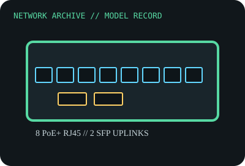

[ MODEL-SPECIFIC NETWORK HARDWARE RECORD ]
NETGEAR GS110TPP 8-Port Gigabit PoE+ Smart Switch
Eight Gigabit PoE+ RJ-45 ports and two 1GbE SFP uplink cages. Specifications are tied to this named product; confirm the physical label, revision and source documentation.

IDENTIFICATION: Verify exact PID/model, revision, label and host support. The catalog separates nominal PHY/link specifications from measured throughput; no benchmark is asserted unless explicitly recorded.
Model-specific specifications and compatibility
| Subcategory | Managed switches |
|---|---|
| Exact product/model | NETGEAR GS110TPP 8-Port Gigabit PoE+ Smart Switch |
| Bus, ports and physical interface | Eight 10/100/1000BASE-T PoE+ RJ-45 ports and two 1000BASE-X SFP uplink cages; external DC supply. |
| PHY, radio or optical interface | Managed Layer 2/Plus switch with 802.3af/at PoE on eight ports; fanless design. The two uplinks are SFP cages, not additional RJ-45 ports. The manufacturer specifies a 120W PoE budget for the model; check the label and exact PSU/revision. |
| Nominal rate (not measured) | 20Gb/s switching bandwidth for the full-duplex port fabric is a nominal aggregate specification, not measured end-to-end forwarding or Internet throughput. PoE budget is separately power-delivery capacity. |
| Measured throughput | No packet-forwarding measurement is asserted. Benchmark with known packet sizes, port pairs, VLAN/QoS settings, traffic direction and versioned firmware. |
| Driver, OS and firmware | NETGEAR Smart Managed Plus web/utility support and firmware are model-specific; check GS110TPP support page for utility/OS and firmware availability. No client NIC driver applies. |
| Platform/media compatibility | Use the exact approved power supply; calculate PoE load within adapter budget, confirm cabling/PoE class and use copper Gigabit peers. Do not mistake its two SFP uplinks for additional RJ-45 ports. |
| Variant warning | GS110TPP is not GS110TP, GS110TPv3 or GS110TUP. Port type, PoE budget, supply, chassis and firmware vary by suffix/revision; the manufacturer data sheet identifies eight PoE+ copper ports plus two SFP uplinks. |
Revision, operation and measurement notes
GS110TPP is not GS110TP, GS110TPv3 or GS110TUP. Port type, PoE budget, supply, chassis and firmware vary by suffix/revision; the manufacturer data sheet identifies eight PoE+ copper ports plus two SFP uplinks.
NETGEAR Smart Managed Plus web/utility support and firmware are model-specific; check GS110TPP support page for utility/OS and firmware availability. No client NIC driver applies.
No packet-forwarding measurement is asserted. Benchmark with known packet sizes, port pairs, VLAN/QoS settings, traffic direction and versioned firmware.
Archival, ESD and preservation notes
Record serial, hardware revision, firmware, MAC, PSU model and PoE configuration. Unplug before cleaning, keep RJ-45 openings dry, and retain the power adapter and mounting hardware with the switch.
Retain source provenance and the revision/date of each supporting document. Store public records without credentials, personal information or other secrets.
Primary manufacturer and standards sources
- NETGEAR GS110TPP official data sheetPrimary manufacturer or standards reference; confirm exact part label, revision, and platform qualification.
- NETGEAR GS110TPP support and downloadsPrimary manufacturer or standards reference; confirm exact part label, revision, and platform qualification.
- IEEE 802.3 Ethernet/PoE standardsPrimary manufacturer or standards reference; confirm exact part label, revision, and platform qualification.
Manufacturer source links are provided for the stated model or exact product family; use the board label and the official revision-specific compatibility list for final qualification.